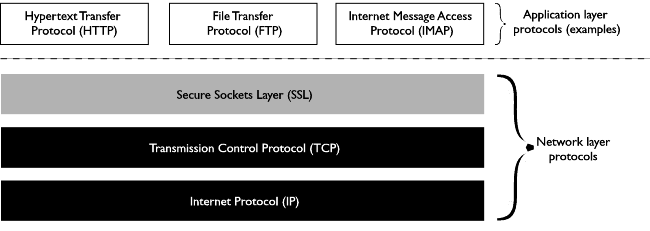
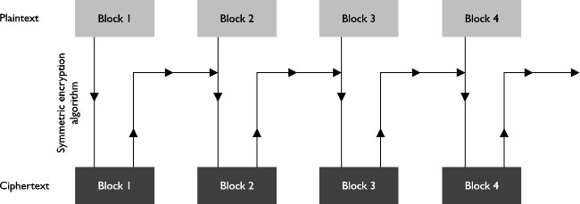
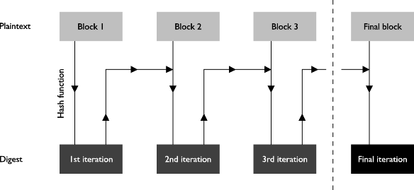
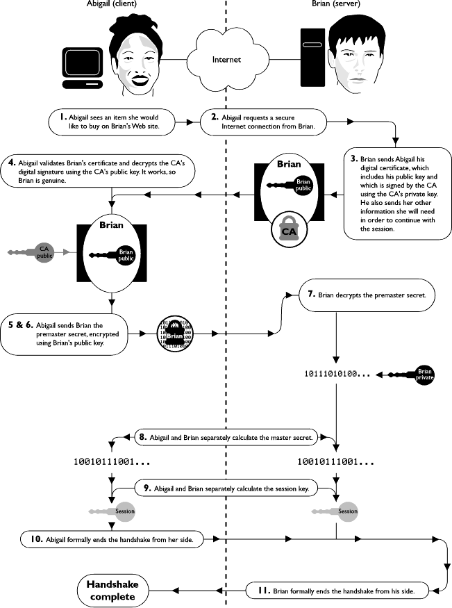
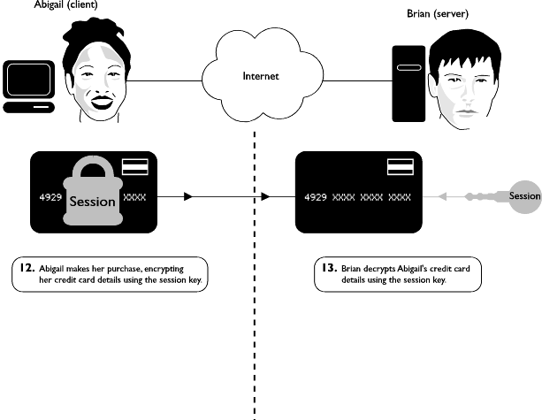
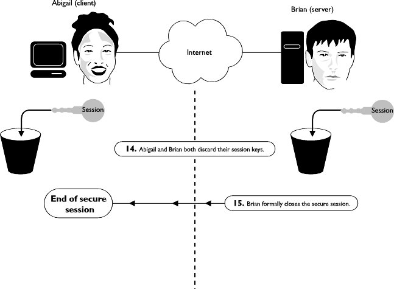
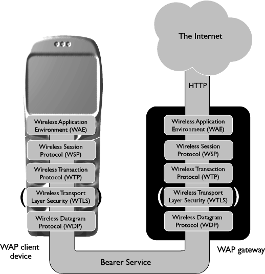
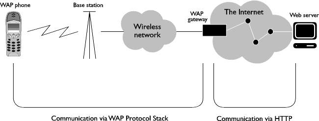
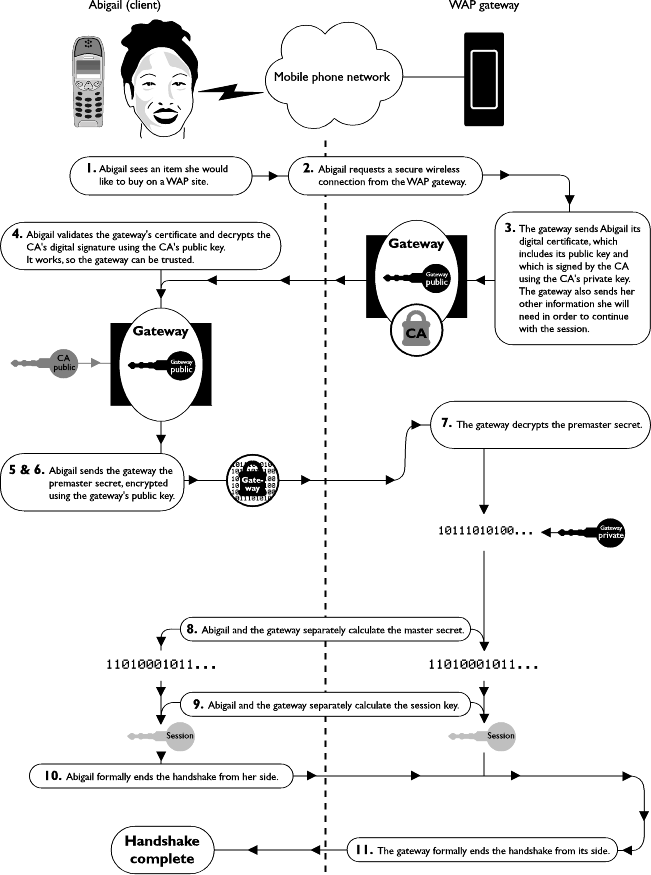
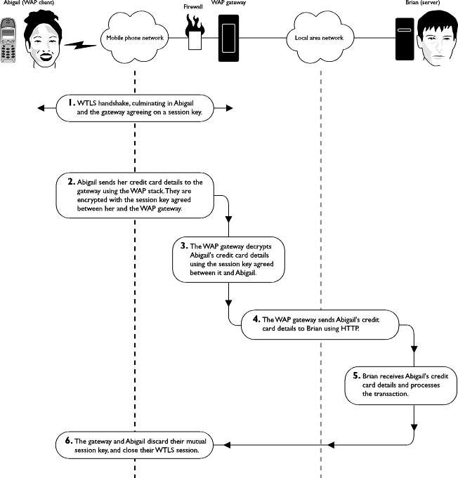

Welcome to the Alligata Server Guide to Mobile Internet Security. This guide is part of the Alligata Server Secure package. It supplements the Alligata Server User Manual, and explains how you can use Alligata Server Secure's encryption features to set up secure Wireless Application Protocol (WAP) services such as credit card transactions and exchange of private information across the Mobile Internet or a mobile intranet.
This guide covers the following subjects:
How security is implemented on the Internet using cryptography, message hashing, digital certificates and digital signatures.
How the Wireless Transport Layer Security (WTLS) component of the WAP stack extends security to the Mobile Internet.
How to obtain the data items items you need to set up secure Mobile Internet services: asymmetric key pairs and digital certificates.
How to configure Alligata Server Secure to offer secure WAP services.
For an understanding of security on the Mobile Internet, some knowledge is required of how security works on the terrestrial Internet. This section explains the ways in which confidential information sent across the Internet can be protected against interception, alteration and forgery by third parties.
To be considered entirely secure, any method of communication must offer the following features:
Privacy. A message must not be readable by third parties between its source and its destination.
Integrity protection. A message must reach its destination in the same form as it left its source, or else the fact that it has been altered in transit must be obvious to its recipient.
Authentication. Means must exist for the recipient of a message to verify that its sender is trustworthy and genuine (that is, not impersonating a third party).
Non-repudiation. The sender of a message must not be able to deny, at a later time, having sent it.
All these features are available on the Internet through the use of encryption, hashing, digital certificates, digital signatures and password protection. These techniques are discussed in detail later in this section. Firstly, it is important to know why they are necessary to begin with.
The Internet is not an inherently secure medium. A message sent across the Internet from one computer to another typically travels via several intermediate computers, called routers. Anyone with access to a router can inspect or modify data packets as they pass through it. Furthermore, before and after its journey across the Internet, data will often pass through a local area network (LAN). The architecture of most LANs is such that data packets from and to one computer on the network can freely be read by any other computer on it.
All this means that a message transmitted across the Internet can potentially be seen, and even altered, by hundreds of people (some known to the sender, others unknown) on its way to its destination.
A solution to the problem of secure Internet communication was first developed by the software company Netscape in 1994. Netscape added a protocol layer, the Secure Sockets Layer (SSL), on top of the Internet's TCP/IP protocol suite in its Navigator Web browser. SSL employs a collection of mathematical and computational techniques to allow data to be sent securely across the Internet in ways that meet all the criteria of privacy, integrity protection, authentication and non-repudiation. By 1998, SSL was firmly integrated into the infrastructure of the Internet as a whole, and was the main catalyst behind the e-commerce boom of the late 1990s. As Figure 1 shows, it can be used in conjunction with any of the higher-level Internet protocols, such as HTTP, File Transfer Protocol (FTP) and Internet Message Access Protocol (IMAP).

Figure 1: SSL's position among the Internet's protocols
SSL uses the following methods to provide security across the Internet:
Cryptography. This is the science of scrambling messages so that they cannot easily be understood by anyone other than their sender and their intended recipient. It enables privacy in Internet communications.
Message hashing. A message is run through a computational algorithm to produce a message 'fingerprint', which can be used to verify that the message has not been altered in transit.
Digital certificates. A digital certificate is a short electronic document that vouches for the authenticity of its holder. It is issued by an organisation called a certificate authority (CA) and is formatted in such a way that it is practically impossible to counterfeit.
Digital signatures. A digital signature is a way of formatting a message so that it is traceable to one source, and one source only. Digital signatures enable non-repudiation in Internet transactions.
The methods used by SSL are generic mathematical and procedural ones, which can be applied to any secure means of communication. As we shall see in Section 3, they have already been adopted by the Mobile Internet's Wireless Transport Layer Security (WTLS) protocol (see Section 3), and they are likely to form the basis of any future developments in Internet security.
Sections 2.4 to 2.8 examine the elements of Internet security as they are implemented in SSL.
The fundamental requirement of any method of secure communication is privacy. In inherently transparent media such as the Internet, this means finding ways of ensuring that even if a third party can see a message, they cannot understand it. The best way to achieve this is to scramble the message in a way that is systematic whilst being all but impossible to deduce from the scrambled message alone.
SSL uses techniques of cryptography to scramble and unscramble data. Cryptography is the art of rendering information opaque by passing it through mathematical scrambling algorithms. The scrambling of information using cryptography is called encryption; its unscrambling is called decryption.
In encryption, message data is passed through a mathematical algorithm involving a particular numeric value. This numeric value is called the key. In basic cryptography, a message can only easily be decrypted by someone with access to the key with which it was encrypted.
Other important cryptographic terms are:
Plaintext: unencrypted data. Despite its name, the term usually refers to any kind of unencrypted data, whether textual, graphical, audio or binary.
Ciphertext: data that has been encrypted.
Cryptanalysis: the study of methods to 'break' ciphertext (that is, deduce its original plaintext form) without direct access to its encryption key, encryption algorithm, or both.
An example of a very simple cryptographic algorithm is to add a value x (the key) to the code of each character in a message. To decrypt an encrypted message, its recipient must know both its encryption algorithm and the algorithm's key. They can then use the key to perform the inverse of the encryption operation on each character of the message. For example, if a message were encrypted by adding 6 to the code of each character in it, it would be decrypted by subtracting 6 from each code. Because the decryption operation is the exact inverse of the encryption operation, this type of cryptography is called symmetric key cryptography.
The algorithms that are actually used in symmetric key cryptography on the Internet are much more complex than this example, in order to be able to withstand attempts to crack them by trial-and-error (known as 'brute force attacks'). Most symmetric agorithms encrypt messages not a character at a time, but a block of bits at a time (typically 64) ( a method called block cipher encryption). In block cipher encryption, a complicated series of transformations is applied to each block in turn, using a very long key (ideally at least 112 bits). In addition, a technique called cipher block chaining is often applied, whereby the result of the encryption of each block is used as a filter for the encryption of the next block (see Figure 2). Cipher block chaining hides any repeated patterns of data that occur in the plaintext message. (Such patterns are always a useful 'handle' for malicious cryptanalysts.)

Figure 2: Cipher block chaining
Advanced symmetric key cryptography offers very effective security for most purposes. (According to one estimate, there is not enough energy available in the solar system to perform a computational brute force attack against a 256-bit key.) However, symmetric key cryptography has an important limitation: before any encrypted communication can take place, the encryption key itself must be securely conveyed from the sender to the recipient. Symmetric key cryptography only allows this to be done by extraneous means. For example, the sender could send the key in an armoured van to the recipient (this is how banks install keys in their cash machines). Of course, this undermines the main advantage of the Internet over other forms of communication, namely its practicality.
To circumvent this limitation of symmetric key cryptography, another type of cryptography, called public key cryptography ( also known as asymmetric key cryptography ) is employed for the exchange of symmetric keys. Public key cryptography exploits the existence of a type of mathematical operation called a one-way function. A one-way function is one that is much easier to perform in one direction than in the other. A simple example of a one-way function is the multiplication of prime numbers: for instance, it is much easier to multiply 4253 by 5521 than it is to find the two prime factors of 23480813. (The multiplication of prime numbers plays a significant role in many cryptographic algorithms.)
Public key cryptography uses advanced one-way functions, consisting of a mathematical algorithm and a numerical key, to encrypt data. Unlike in symmetric key cryptography, however, the key used to encrypt a message cannot be used to decrypt it. Decrypting the message requires a different key that is mathematically related to the encryption key, but for all practical purposes impossible to derive from it. Even knowing the encryption algorithm is no help in calculating the encryption key, for which reason the best-known encryption algorithms are kept in the public domain. (The thinking is that submitting encryption algorithms to the scrutiny of the world's cryptanalysts is the best way of testing their robustness. For example, the RSA algorithm used by Alligata Secure has so far yielded no significant weaknesses.)
Note that deriving a decryption key from an encryption key is always hypothetically possible; in fact, mathematically it is many times quicker to work out a private asymmetric key than it is to work out a symmetric key of the same length. Still, calculating a private assymetric key of 1792 bits should ( for the next few years, at least ) be all but computationally infeasible even using hundreds of thousands of computers working in parallel. Certainly, for almost every organisation in the world, it will be financially infeasible.
Let us suppose Brian wants to set up a secure Internet connection. He first uses an appropriate software tool to create an asymmetric key pair, consisting of one public and one private key. Others can then use his public key to encrypt messages to him, which he ( and no one else ) can read using his private key. In this way, anyone can send Brian a private message without going through the risk or inconvenience of exchanging symmetric keys beforehand.
Conversely, if Brian wants to send a message that others can be sure originated with him, he encrypts it using his private key, and others use his public key to read it. (This is the process of creating a digital signature, and is elaborated in Section 2.7.)
In practice, the complex mathematical processes used by public key cryptography make it rather slow for use with long messages. SSL therefore restricts its use of public key cryptography to the exchange of a symmetric key (see Section 2.3.1) between the client and the server at the start of a secure Internet session. This symmetric key is agreed on-the-fly between the client and the server and it is called the session key. After the session is over, it is discarded by both the client and the server.
The ways in which symmetric and asymmetric cryptography are combined in real Internet transactions are illustrated in Section 2.8.
We have seen how cryptography can be used to send messages across the Internet that are unreadable by third parties. However, this does not prevent third parties from blindly altering messages between their source and their destination. Depending on the content of the message, such alterations may be apparent to the recipient of the message or not. (For example, indiscriminate interference with a text message is usually easier to spot than with a block of binary data.)
Integrity protection is the term applied to techniques for verifying that a message reaches its intended recipient in exactly the same form as it leaves its sender. While integrity protection does not guarantee that a message will reach its desination unchanged, it does (virtually) guarantee that any change is obvious to the recipient.
Integrity protection uses computational algorithms called hash functions. A hash function is a one-way function (see Section 2.3.2) into which data ( such as an Internet message ) is fed, and whose result is a value of a fixed length in bits. Passing a message through a hash function produces a hash value that is effectively a 'fingerprint' of the message. This fingerprint is called the message digest. It is usually much shorter than the message itself.
The sender of a message computes its digest, encrypts the digest using their private key and sends it appended to the message. The recipient verifies the integrity of the message by decrypting the digest using the sender's public key, then running the message through the same hashing algorithm that produced the digest. If the message has been interfered with on its journey, the hash value calculated by the recipient will not match the value of the digest.
In fact, a matching hash value is not an absolute guarantee of integrity: a collision is theoretically possible, whereby the modified message happens to produce exactly the same hash value as the original message. However, collisions in good-quality hash functions are so rare that their calculation may be considered computationally intractable.
SSL allows privacy and integrity in Internet communications. However, without further measures, the anonymity of the Internet makes it easy for a user to impersonate another user. For example, a malicious party could create a Web site on which they masquerade as a respected organisation, set up a private connection for transactions, and begin obtaining money and credit card details from unsuspecting 'customers'.

Figure 3: Creation of a message digest using a hash function
This problem is addressed by the use of digital certificates. A digital certificate is a message sent by one party to another at the beginning of a secure Internet session, verifying the sender's identity and vouching for their integrity. The certificate is obtained from an organisation called a certificate authority (CA). The certificate is virtually impossible to forge, for reasons that are explained later.
Once a secure session has been requested by an Internet client such as a Web browser, it typically continues with the server sending the client its digital certificate. The server's digital certificate contains the following information:
The server's public key
The certificate's serial number
The certificate's validity period
The server's domain name
The domain name of the CA that issued the certificate
The certificate is supplied with its hashed digest (see Section 2.5.1). The digest is encrypted using the private key of the CA that issued the certificate; this encrypted digest constitutes the CA's digital signature. If the digital signature can be decrypted using the CA's public key, then the certificate must have originated with the CA. (See Section 2.7 for more on digital signatures.)
Upon receiving the server's certificate, the client validates it by checking the following criteria:
That it is valid for the current date.
That it applies to the server that sent it.
That the CA that issued it is known and trusted. (To do this, the client checks the CA's own certificate, which is signed by the CA itself.)
That the CA's digital signature can be decrypted using the CA's public key. (Most Web clients contain a list of the public keys of the best known CAs, so they do not need to search the Internet for them.)
The client warns the user if the certificate fails any of these tests. The user may continue with the session at their own risk, if they wish.
Digital certificates can be issued in chains. For example, a large CA might issue a certificate to a smaller CA, which issues a certificate to a still smaller CA, which issues end-entity certificates to Internet traders. This helps distribute the task of administering digital certificates. When an Internet client receives a certificate from a chain, it checks the certificate of every CA in the chain as described above, until it reaches the self-signed certificate of a top-level CA.
Digital certificates are not only used by Internet servers: they can also be obtained for Internet clients. In practice, though, demand for client certificates has proved minimal. Authentication of a client by a server, where it is implemented at all, is usually through use of a user name and a password. While this method is not infallible, it nevertheless adds a layer of security to Internet transactions that is absent from many non-Internet confidential transactions ( for example, ordering goods by credit card over the telephone).
The final requirement of secure communications is non-repudiation: a message's source must be provable upon demand. Non-repudiation is normally achieved using digital signatures.
A digital signature is simply a way of encoding data so that its source and its integrity are verifiable. Digital signatures use the same techniques of cryptography and hashing that are used to provide privacy and integrity protection (see Sections 2.3 and 2.4). The difference is that the roles of public and private keys are reversed.
Let us suppose that Abigail wants to stamp a message with her digital signature. First she passes the message through a hash function to create a message digest. She then uses her private key to encrypt the digest, and attaches the encrypted digest to the message. This encrypted digest constitutes her digital signature. (Of course, Abigail could encrypt the entire message using her private key; however, encrypting the digest is sufficient and much quicker.)
If Brian is the recipient of Abigail's message and wants to verify that it originated with her, he uses Abigail's public key to decrypt her signature. He then runs the message through the same hash function that Abigail used to create the digest, and compares it with the value of Abigail's decrypted signature.
The main users of digital signatures on the Internet at present are CAs, who stamp them on every certificate they issue (see Section 2.6). Although client-side digital signatures are an effective means of non-repudiation, demand for them has so far been minimal. This suggests that businesses and customers are happy to carry out transactions without them. Instead, client-side non-repudiation is normally implemented using password protection, which is regarded as an acceptable compromise between practicality and guaranteed security.
Secure Internet transactions rely on quite complex combinations of public key cryptography, symmetric key cryptography, hash functions, digital certificates and digital signatures. The following example illustrates the sequence of steps involved in a typical SSL session.
Note that by far the most complex part of a secure Internet session is the initial handshake, whereby the parties agree on a secure data format for the rest of the session and, if necessary, establish each other's credentials.
This example demonstrates the most usual type of SSL handshake, with the client authenticating the server, but without the server authenticating the client. The transaction is summarised graphically in Figures 4, 5 and 6.
Abigail, a Web surfer, sees an item she would like to buy on Brian's Web site.
Abigail clicks a button on Brian's Web site that sends a request for a secure Internet session to Brian. The following items are appended to the request:
- Various information about what versions of SSL Abigail's Web browser supports, what encryption algorithms it supports, and so on.
- Some randomly generated data. This will be used, along with other data, to generate the session key (see step X).
Brian receives Abigail's request for a secure session and sends her the following items:
- His digital certificate, including his public key. The certificate is signed by a trusted CA using its private key.
- Information about what versions of SSL Brian's Web server supports, what encryption algorithms it supports, and so on.
- Some randomly generated data which will be used in the generation of the session key.
Brian could also request Abigail's digital certificate. However, in practice it is very rare for a server to require a certificate from a client.
Abigail validates Brian's certificate as outlined in Section 2.6.1. If the validation is successful, she is happy that Brian is who he says he is, and that he is a reputable trader.
Abigail performs a series of operations on the random data she sent to Brian, and the random data Brian sent to her, to produce a piece of data called the premaster secret.
Abigail encrypts the premaster secret using Brian's public key and sends it to Brian. (If Brian had requested her digital certificate, she would also send her certificate for Brian to validate.)
Brian receives the premaster secret from Abigail.
Brian decrypts the premaster secret. He and Abigail simultaneously perform a series of operations on it, to arrive at a piece of data called the master secret.
Abigail and Brian simultaneously perform a series of operations on the master secret to arrive at the session key (see Section 2.4.3), which will be used to encrypt the information they want to send to each other.
Abigail sends Brian two messages. The first confirms that all further messages from her will be encrypted using the session key. The second is an encrypted message that formally ends the handshake from her side.
Brian sends Abigail two messages. The first confirms that all further messages from him will be encrypted using the session key. The second is an encrypted message that formally ends the handshake from his side.

Figure 4: SSL handshake. Step numbers correspond to those in the textual account
Abigail fills in the relevant form on Brian's Web site, including her credit card details. She presses a button which sends the form to Brian, encrypted using the session key.
Brian receives Abigail's credit card details and decrypts them using the session key.

Figure 5: Transfer of confidential information using SSL. Step numbers correspond to those in the textual account
Abigail and Brian both discard their session keys.
Brian closes the secure session.
Finally, Brian sends Abigail her item and her credit card company the bill.

Figure 6: SSL session closure. Step numbers correspond to those in the textual account
Mobile Internet security uses the same methods of encryption, hashing, digital certificates and digital signatures that SSL provides for the terrestrial Internet. However, instead of SSL, the Mobile Internet is served by a streamlined protocol called Wireless Transport Layer Security (WTLS). WTLS is an optional component of the Mobile Internet's Wireless Application Protocol (WAP) stack. It resides between the Wireless Datagram Protocol (WDP) and the Wireless Transaction Protocol (WTP) layers of the WAP stack. The structure of the WAP stack is shown in Figure 7.

Figure 7: The WAP stack
Like any Mobile Internet transaction, a secure Mobile Internet transaction extends across both the mobile telephone network and the Internet, using WAP for the wireless part of the journey, the Hypertext Transfer Protocol (HTTP) suite for the Internet part, and a WAP gateway in the middle to translate between the two. Figure 8 shows an overview of Mobile Internet communication, from the mobile device at one end to the HTTP server at the other. If security is required across the whole communication channel, SSL can be used between the WAP gateway and the HTTP server. Alternatively, the content provider can host the gateway themselves. (As will be seen later, this arrangement provides optimum security.)

Figure 8: WAP communication overview
Like WAP as a whole, WTLS uses the Internet as a model for its procedures and is very similar, in outline, to SSL. However, it has a number of additional characteristics:
Compact coding. WTLS employs more compact coding than SSL, in order to keep messages as short as possible and to minimise the time and processing power required by the client device to interpret and transmit them. These measures help to offset the speed limitations imposed by the high latency and low bandwidth of wireless networks. They also compensate for the low power and computational resources of mobile devices.
Datagram support. WTLS operates directly above WAP's Wireless Datagram Protocol (WDP), and therefore needs to accommodate the unreliability and unpredictability of connectionless datagram communication. Rigorous confirmation and retransmission procedures are rendered doubly important by the intermittency and variable quality of radio transmission.
Optimised handshakes. WTLS allows the WAP gateway, acting as a server to the mobile WAP client, to authenticate the client by obtaining the client's digital certificate from an external source, rather than the client itself. This reduces the processing and memory burden on the client.
Dynamic key refreshing. Communication via radio signals is particularly vulnerable to 'tapping' by third parties. As an extra security measure against eavesdropping, WTLS allows for the symmetric session key to be changed regularly over the course of the session, without the need for a clean handshake.
Fast encryption and hashing algorithms. WTLS uses the quickest, most efficient algorithms available for hashing and encryption (see Section 2), so that client processing time and power consumption are kept within reasonable limits.
Client-gateway rather than client-server coverage. Unlike SSL, WTLS does not span the whole of the communication channel from the client to the content provider's HTTP server, but only communication over the mobile telephone network between the client and the WAP gateway. If security is also required between the gateway and the HTTP server, it must be implemented using SSL.
The complete WTLS specification can be found on the WAP Forum's Web site at www.wapforum.org.
The WTLS specification allows for three classes (levels) of WTLS implementation:
Class 1: Anonymous encryption. Data is encrypted, but certificates are not exchanged between the client and the gateway.
Class 2: Encryption with server authentication. Data is encrypted and the client requires a digital certificate from the server.
Class 3: Encryption with client and server authentication. Data is encrypted and the client and the server exchange digital certificates.
The WTLS handshake is very similar to the SSL handshake. The following example illustrates the most common form of the WTLS handshake, that for WTLS class 2 (see Section 3.1.1). This involves the client authenticating the gateway, but not vice versa. It is illustrated in Figure 9.
This example shows the full handshake. WTLS also uses an abbreviated handshake for resumption of a previously established session. This involves re-exchanging a session identification code agreed when the session was first established.
Bollocks!
Abigail, a WAP phone user user, sees an item she would like to buy on a WAP site.
Abigail activates a link on her WAP phone that sends a request for a secure Internet session to the WAP gateway. The following information is appended to the request:
- Various information about what versions of WTLS Abigail's WAP browser supports, what encryption algorithms it supports, and so on.
- Some randomly generated data. This will be used, along with other data, to generate the session key (see steps 5 onward).
The gateway receives Abigail's request for a secure session and sends her the following items:
- Its digital certificate, including its public key. The certificate is signed by a trusted CA using its private key.
- Information about what versions of WTLS, encryption algorithms and so on are supported by the WAP gateway.
- Some randomly generated data which will be used in the generation of the session key.
In WTLS class 3 (see Section 3.1.1) the gateway would also request Abigail's digital certificate at this point. Alternatively, it could obtain Abigail's certificate from an external source on the Internet - a procedure which characterises the optimised WTLS handshake.
Abigail validates the gateway's certificate as outlined in Section 2.6.1. If the validation is successful, she is happy that the gateway's proprietor is genuine and trustworthy.
Abigail performs a series of operations on the random data she sent to the gateway, and the random data the gateway sent to her, to produce the premaster secret.
Abigail encrypts the premaster secret using the gateway's public key and sends it to the gateway. (In WTLS class 3, she would also send her digital certificate for the gateway to validate.)
The gateway receives the premaster secret from Abigail.
The gateway decrypts the premaster secret. The gateway and Abigail simultaneously perform a series of operations on it, to arrive at the master secret.
Abigail and the gateway simultaneously perform a series of operations on the master secret to arrive at the session key (see Section 2.4.3), which will be used to encrypt the information they want to send to each other.
Abigail sends the gateway two messages. The first confirms that all further messages from her will be encrypted using the session key. The second is an encrypted message that formally ends the handshake from her side.
The gateway sends Abigail two messages. The first confirms that all further messages from it will be encrypted using the session key. The second is an encrypted message that formally ends the handshake from the gateway's side.

Figure 9: WTLS handshake
WTLS specifies two possible formats for digital certificates:
X.509. This is the standard format for digital certificates in SSL, and is optional in implementations of WTLS. However, it is not supported by the current generation of WAP client devices.
The principal information contained in an X.509 certificate is:
The subject's name
The issuing CA's name
The certificate's validity period
The asymmetric and symmetric algorithms used for key exchange
The subject's public key
The digital signature of the issuing CA
Alternative names for the subject (optional)
Allowed key usage - for example, whether the subject's public key may be used for encryption, server authentication, signing other certificates, and so on (optional)
WTLS. WTLS certificates are similar to X.509 certificates but more compactly coded, so as to suit the high latencies and low bandwidth of wireless networks, and the limited processing reources of WAP client devices. WTLS certificates also omit some of X.509's non-essential fields, such as alternative subject names and key usage options.
A WTLS certificate includes the following information:
The subject's name
The issuing CA's name
The certificate's validity period
The asymmetric and symmetric algorithms used for key exchange
The subject's public key
The digital signature of the issuing CA
On the terrestrial Internet, a CA can revoke a certificate it has issued before the end of the certificate's validity period, if the security of the owner's private key has been compromised or if there is new reason to doubt the owner's identity or integrity.
Certificate revocation on the terrestrial Internet is implemented by means of certificate revocation lists issued by CAs. When an Internet client receives a certificate from a secure server, it retrieves the signing CA's certificate revocation list from the Internet, checks that the certificate does not appear it, and if not, accepts the certificate.
On the Mobile Internet, it is impracticable for a small client device to check a revocation list every time it downloads a gateway's certificate. The problem of revocation is therefore addressed by the use of short-lived certificates. The CA, instead of issuing the secure WAP gateway with a single certificate valid for a long period, sends it a fresh certificate at short intervals throughout that period - for example every 25 hours. Each certificate is only valid until the next one arrives. If the CA needs to revoke its endorsement of a gateway (for example, because the security of the gateway's private key has been compromised), it simply stops sending the gateway certificates. Clients of the gateway will begin receiving expired certificates, and therefore will know that its security can no longer be relied on.
NOTE: THIS SECTION WILL NEED UPDATING.
Alligata Secure supports all three WTLS implementation classes.
Alligata Secure supports both X.509 and WTLS certificates. Note, however, that X.509 certificates are not currently supported by WAP client devices.
Alligata Secure supports asymmetric keys generated by the RSA alogorithm and symmetric keys generated by the MC5 algorithm. [check]
As we have seen, WTLS provides security between the client device and the WAP gateway. Most secure Mobile Internet transactions will also require security between the WAP gateway and the HTTP server. This can be implemented using one of two arrangements:
SSL can be used between the gateway and the HTTP server. This method presents a very slight security risk, because data is momentarily held unencrypted inside the gateway (a phenonmenon known as the 'WAP Gap'). It is therefore important that administrative access to the gateway is strictly limited, that the relationship between the gateway host and the content provider is strong and trusting, and that the decrypted data is never stored outside the gateway's memory. This set-up is not recommended for operations requiring guaranteed security, such as online banking.
The gateway can be hosted by the content provider and placed behind the content provider's firewall. This set-up obviates both the 'WAP Gap' and the need for SSL between the gateway and the HTTP server. The content provider can, if they want, act as an Internet service provider (ISP) to the whole of the Mobile Internet, once the secure transaction is over. Alternatively, the content provider can close the secure WAP connection after the secure transaction has taken place, in which case the client user must dial in to their usual gateway in order to view other WAP sites.
Figure 10 outlines a secure Mobile Internet transaction of the second type, with the WAP gateway behind the content provider's firewall. Abigail is now the user of a WAP client device, communicating with Brian via the WAP gateway.

Figure 10: WTLS transaction, with the WAP gateway hosted by the content provider
NOTE: THIS SECTION IS INCOMPLETE AND IN PLACES INACCURATE. IT MAY, HOWEVER, BE USABLE AS THE BASIS FOR THE DOCUMENTATION FOR THE SECURE VERSION OF [KANNEL], WHEN THE LATTER IS RELEASED.
Alligata Secure is supplied with the OpenSSL open source software toolkit. OpenSSL includes a library of general purpose security functions that you can use in conjunction with Alligata Secure to implement secure Mobile Internet services. OpenSSL enables you to:
create symmetric or asymmetric keys
create [digital certificates]
encrypt messages
calculate message digests
Of OpenSSL's features, creation of symmetric keys, message encryption and digest calculation are incorporated into the Alligata Secure software. You can customise them by changing the configuration variables described in Section 4.X. Before you do anything else, however, you must create an asymmetric key pair.
An asymmetric key pair is required for WTLS connections between a WAP gateway and client devices (see Section 3). Alligata Secure supports keys generated by the RSA algorithm.
The following instructions show you how to create an RSA key pair using OpenSSL. Many additional options are also available: see the OpenSSL man pages (in particular openssl and genrsa) for details.
To create an asymmetric key pair:
Create three or four files containing random data. You can do this by using the command
echo random_string > file_name
for each file.
For example:
echo ;st509tjjm[4t#~{sa{)8EHjhjOSFOhoij > rand1.txt
These files will be used, together with the random data file $HOME/.rnd, to generate the key pair.
Type
openssl genrsa -rand random_data_files -out output_file -storage_encryption_algorithm -passout password_source
Notes:
the file names should be separated by colons :.
the name of the file to which the public and private keys will be output. Conventionally, the file name should have a .pem extension.
the symmetric algorithm used to encrypt the key file. Possible values are -des, -des3 and -idea. This parameter is nominally optional, but should always be used except for testing.
the source of the password that will be used to decrypt the key file. This parameter is formatted as follows:
password is the password. Avoid except for testing, as Linux utilities such as ps can see the password.
The denoted environment variable's value is the password.
The first line of the denoted file is the password. Ensure that the file's read permissions are limited to those who will need the password.
The password is read from the denoted file descriptor.
The password is read from the standard input.
Example key generation command:
openssl genrsa -rand rand1:rand2:rand3 -out abigailskeys.pem -des3 -passout file:/var/keypass
Delete the files of random data that you created in Step 1.
To generate a file containing just the public key, type
openssl rsa -in source_file -out output_file -pubout
For example:
openssl rsa -in abigailskeys.pem -out abipub.pem -pubout